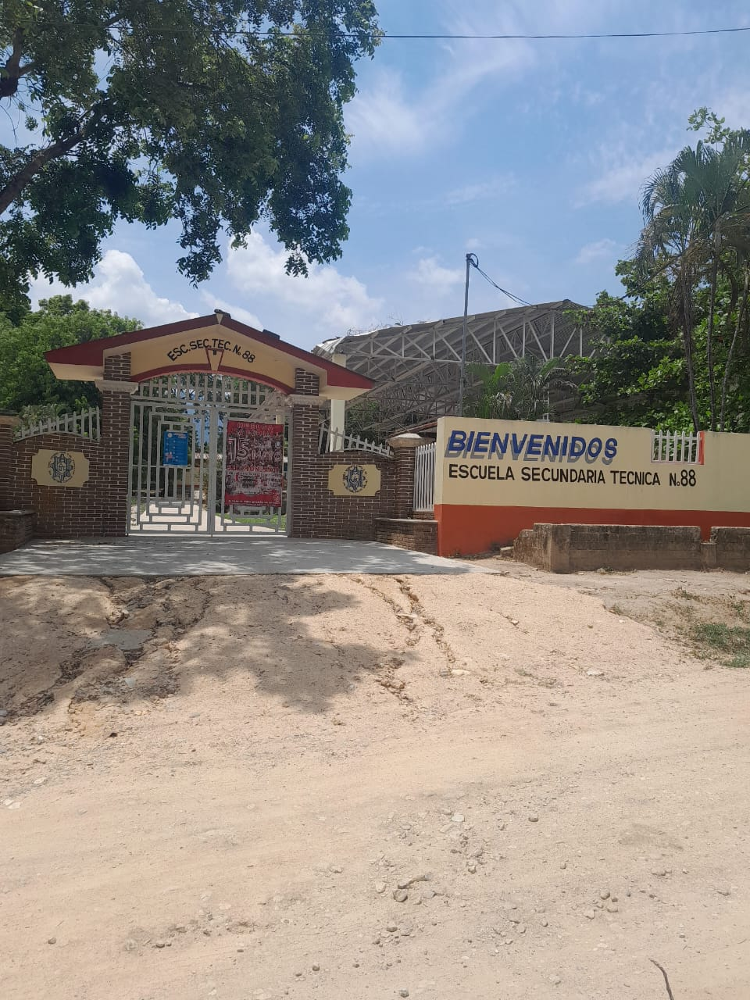
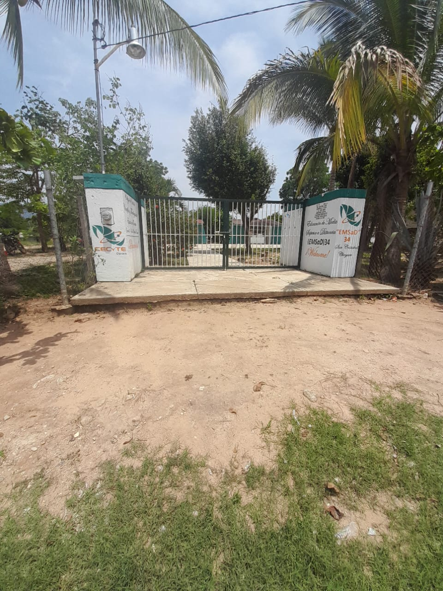
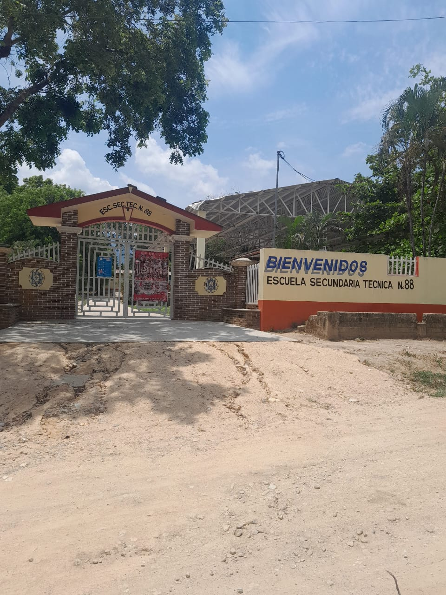
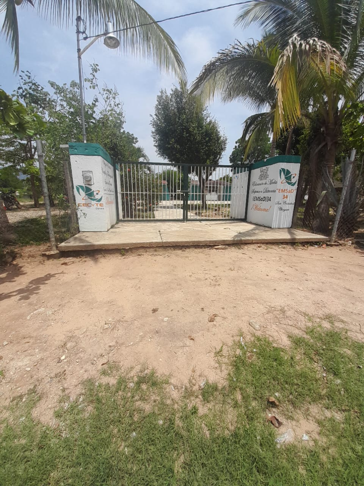
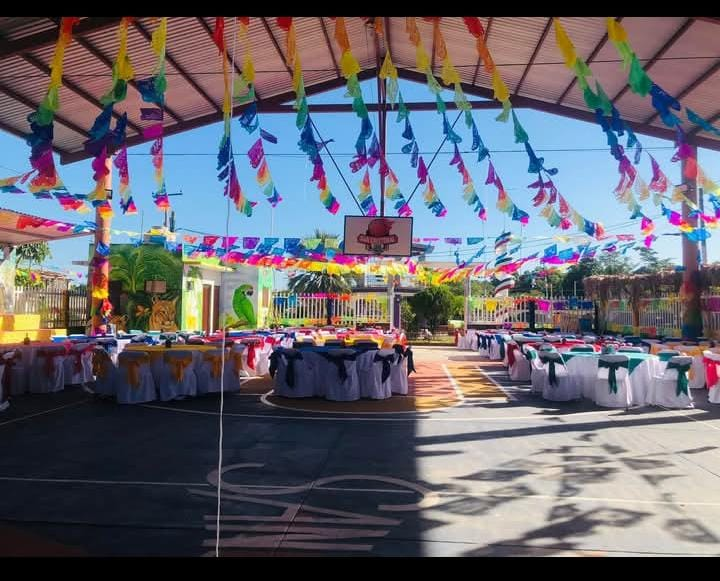
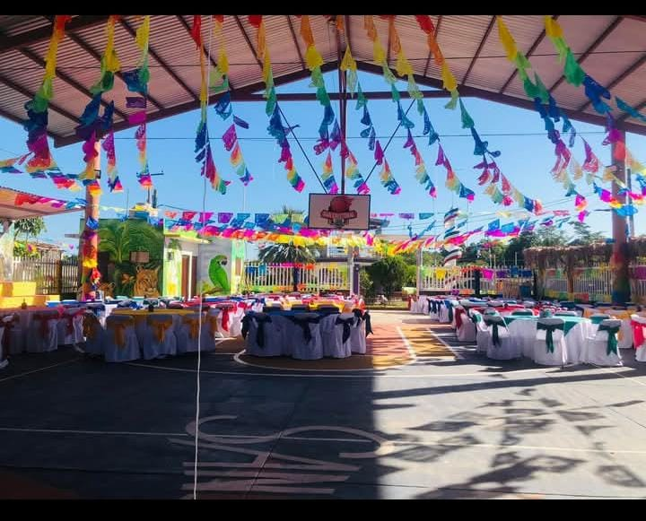

📛 Nombre Oficial
La comunidad de San Cristóbal está integrada además de sus elementos individuales, de una iglesia católica, una agencia municipal, centro de salud, escuelas, un quiosco, cuenta con luz eléctrica, pequeñas tiendas de abarrotes, una tienda conasupo, internet y señal Telcel.
🎓 Educación
Jardín de Niños Quetzalcóatl: Con clave 20DJNO9120 fundado en enero de 1984.
Escuela Primaria Rural Estatal “Miguel Hidalgo”: Con clave 20DPR03981 se fundó el 20 de enero de 1950 y cuenta con seis aulas.
Escuela Secundaria Técnica No.88: Con clave 20DSTOOOSR fundado el 9 de 1976.
CECyTE EMSaD No.34: Con clave 20EMS0034B fundado el 28 de noviembre de 2003.
🩺 Salud
La comunidad cuenta con un Centro de Salud.
🏀 Deporte
Nuestra comunidad cuenta con 4 canchas de basquetbol: 1 en la Escuela Primaria, 2 en Escuela Secundaria Técnica No.88 y 1 pública.
💡 Servicios Públicos
• Agua potable
• Centro de Salud
• Agencia municipal
• Luz eléctrica
• Sky
• Medios de Comunicación
🛣️ Vías de Comunicación
La comunidad de San Cristóbal cuenta con caminos rurales. Existen caminos de terracería que conectan la comunidad con localidades cercanas. En temporada de lluvias, algunos tramos pueden volverse difíciles de transitar. También cuenta con camionetas de pasaje.
💼 Actividad Económica
La economía de San Cristóbal se basa principalmente en actividades agropecuarias, comercio local y oficios tradicionales, que permiten a sus habitantes generar ingresos y satisfacer sus necesidades básicas.
Otras de sus actividades económicas son:
🌾 Agricultura
🐄 Ganadería
🛒 Comercio Local
🔧 Oficios y servicios
📛 Población económicamente activa por sector
1.-Sector Primario (60-70%)
2.-Sector Secundario (10-15%)
3.-Sector Terciario (15-25%)
San Cristóbal ha existido desde tiempos antiguos, incluso antes de la Revolución de Emiliano Zapata y Venustiano Carranza. No se tiene un registro exacto de su fundación, pero se sabe que el pueblo ha sido habitado por indígenas desde tiempos remotos, cuando solo existían rancherías y no había construcciones modernas.

 



 
